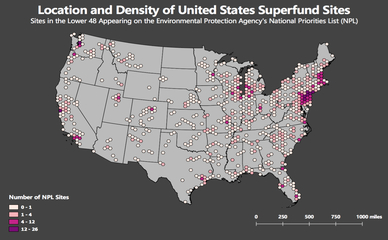

MAP 672: Programming for Web Mapping
Cartogaphy Portfolio Page for Chris Van Dyke

This map depicts the locations of sites in the Lower 48 appearing on the Environmental Protection Agency's National Priorities List (NPL). The NPL contains sites at which there are known or threatened releases of hazardous substances, pollutants, or other contaminants that are capable of endangering human health and the environment. QGIS was used to perform hexbin mapping.

This map displays carbon dioxide emissions from U.S. power plants. When zoomed out, the map depicts CO2 emissions per square kilometer at the county level. Users can click on individual counties to view detailed emissions data. At larger scales, users can determine the level of emissions from individual facilities. Data were initally mapped in QGIS before they were exported to Carto for additional processing
This map displays coal, hydroelectric, and solar power plants across the United States. Users can toggle individual layers on and off to inpect the locations and relationships among different facilities. When a user clicks on the map, it displays all power plants located within 500 km of the click point. Within this area, users can select different facilities to view their name, fuel source(s), and the distance from the click event. Initial data mapping was performed in QGIS, after which it was exported to Carto for additional processing.